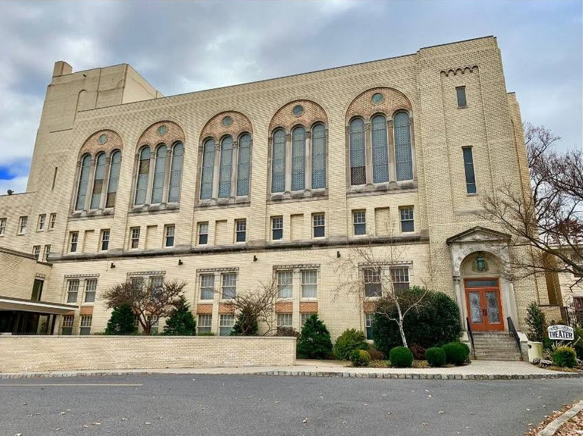
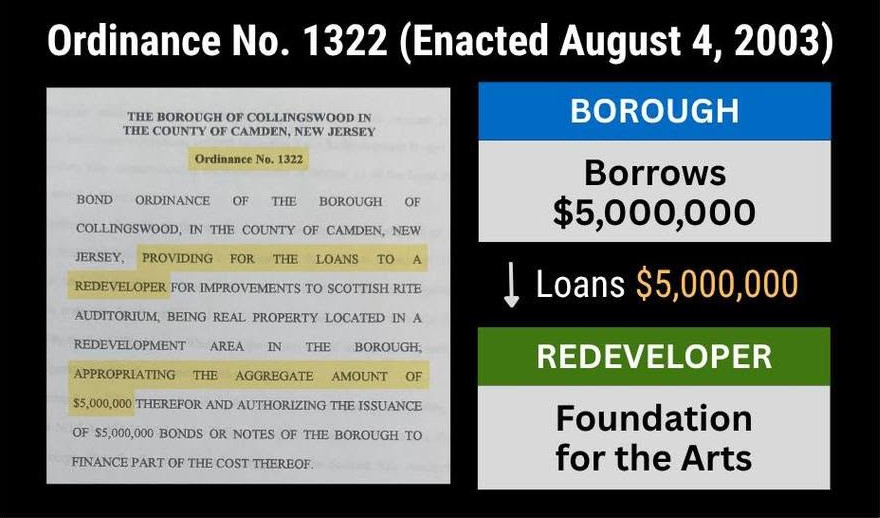
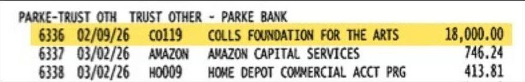
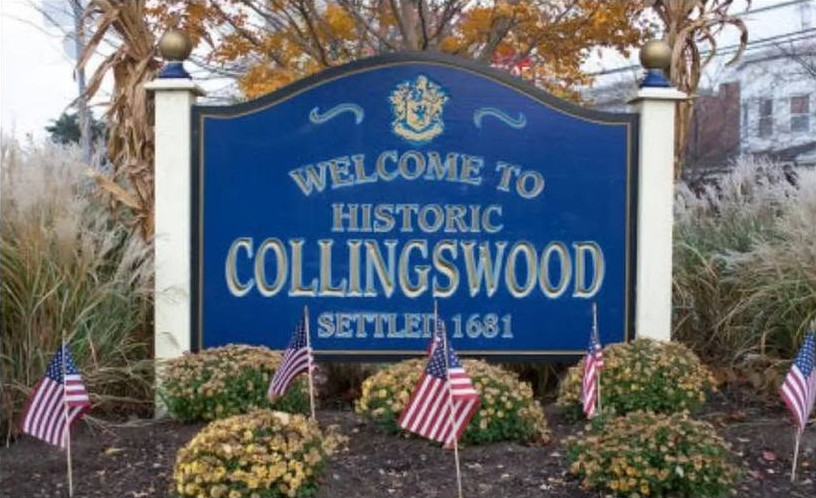

The Scottish Rite.
Who actually runs it?
Conflicts of interest and millions of taxpayer dollars for the private Collingswood Foundation for the Arts.

Most people think the Borough runs the Scottish Rite.
It doesn’t.
The private nonprofit Collingswood Foundation for the Arts runs the Scottish Rite. The Foundation is not part of Borough government.
(Excelsior Consistory)
Manages the Scottish Rite
More than
of Borough money has been transferred or loaned to the Foundation.

Most loans include...
Borough audits show NO repayment agreement or schedule for these loans.
![BOROUGH OF COLLINGSWOOD
NOTES TO FINANCIAL STATEMENTS
YEARS ENDED DECEMBER 31, 2018 AND 2017NOTE 23: LOAN TO REDEVELOPER
On August 4, 2003, the Borough of Collingswood adopted Bond Ordinance 1322 providing for a $5,000,000.00 loan to a redeveloper, Collingswood Foundation for the Arts, a New Jersey non-profit corporation, for the purpose of renovations of the Scottish Rite Auditorium as a performing arts and community theater center. This loan was to the Collingswood Foundation for the Arts, a New Jersey non-profit corporation, for the purpose of renovations of the Scottish Rite Auditorium as a performing arts and community theater center. The amount owed to the Borough of Collingswood as of December 31, 2018 and 2017, is $4,992,466.33 and $4,992,466.33, respectively. No payment plan has been established as of the date of the audit.
Report of Audit Year Ended December 31, 2018, Page 80](loan.jpg)
The Foundation currently owes over $6,400,000 to the Borough.
Key officials have been involved on both sides.
N.J.S.A. 40A:9-22.5
No local government officer or employee shall act in his official capacity in any matter where he has a direct or indirect financial or personal involvement that might reasonably be expected to impair his objectivity or independence of judgment.
The Foundation’s governance has been called into question.
But Borough funding continues.

Why does this matter?
The private Foundation controls the Scottish Rite and all of the revenue from events hosted there.
Yet, Collingswood taxpayers foot the bill.
In 2026, Commissioner Maley voted against the 2026 municipal budget, opposing the transfer of $222,500 of PILOT revenue to support Collingswood schools.
Yet, Maley voted for $237,345.28 in payments to his Foundation in 2025, and his Foundation still owes over $6,400,000 with no repayment plan or schedule on record.
In 2025, Maley sued the Borough to block support for Collingswood firefighters and EMS, alleging a conflict of interest on the part of Mayor Solano-Ward.
Yet, what conflicts of interest are being ignored by Maley as he approves payments to his private Foundation?
Where is all of the revenue from the Scottish Rite going?
These are our tax dollars.
Demand transparency.
Seek accountability.

All of the documents and sources are public.
Read them here.